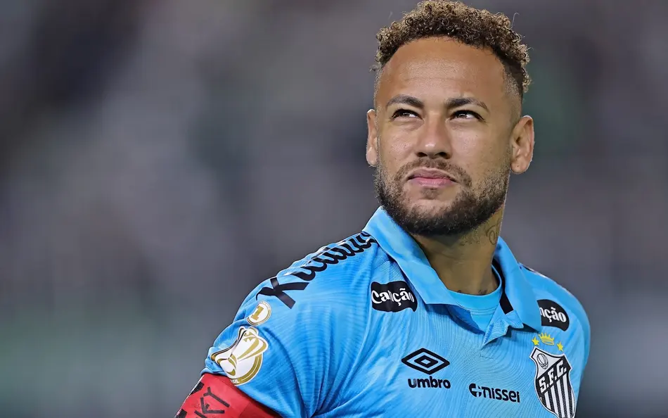

Neymar Júnior

Neymar da Silva Santos Júnior, conhecido como Neymar Jr, é um dos jogadores de futebol mais conhecidos e talentosos do mundo. Nascido em 5 de fevereiro de 1992, na cidade de Mogi das Cruzes, em São Paulo, Neymar iniciou sua carreira nas categorias de base do Santos Futebol Clube, onde rapidamente chamou atenção por sua habilidade, velocidade e capacidade de driblar os adversários. Ainda muito jovem, conquistou títulos importantes e se tornou um dos principais nomes do futebol brasileiro.
Em 2013, Neymar foi contratado pelo FC Barcelona, formando um ataque histórico ao lado de Lionel Messi e Luis Suárez. Durante sua passagem pelo clube espanhol, conquistou diversos títulos, incluindo a Liga dos Campeões da UEFA. Em 2017, transferiu-se para o Paris Saint-Germain F.C. em uma negociação que se tornou a mais cara da história do futebol na época.
Além do sucesso nos clubes, Neymar também teve grande destaque na Seleção Brasileira de Futebol. O jogador participou de importantes competições internacionais, como Copa do Mundo e Copa América, sendo reconhecido como um dos principais atletas de sua geração. Em 2016, conquistou a medalha de ouro olímpica nos Jogos do Rio de Janeiro, um feito inédito para o futebol masculino brasileiro.
Fora dos gramados, Neymar também é uma personalidade muito influente nas redes sociais e no mundo da publicidade. Sua carreira é marcada tanto por grandes conquistas quanto por desafios, como lesões e pressão da mídia. Mesmo assim, ele continua sendo um símbolo do futebol brasileiro e uma referência para milhões de fãs ao redor do mundo.